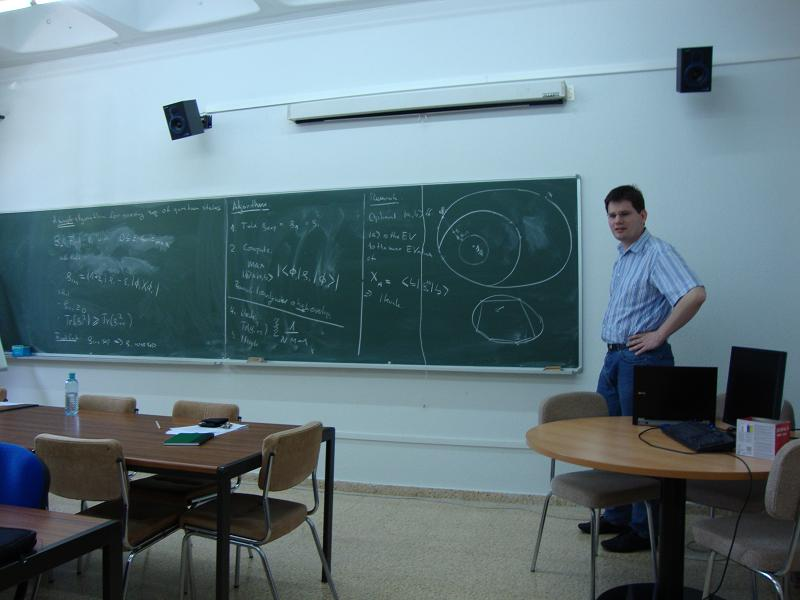
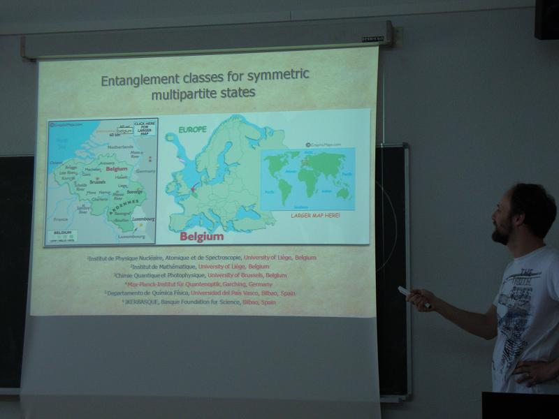
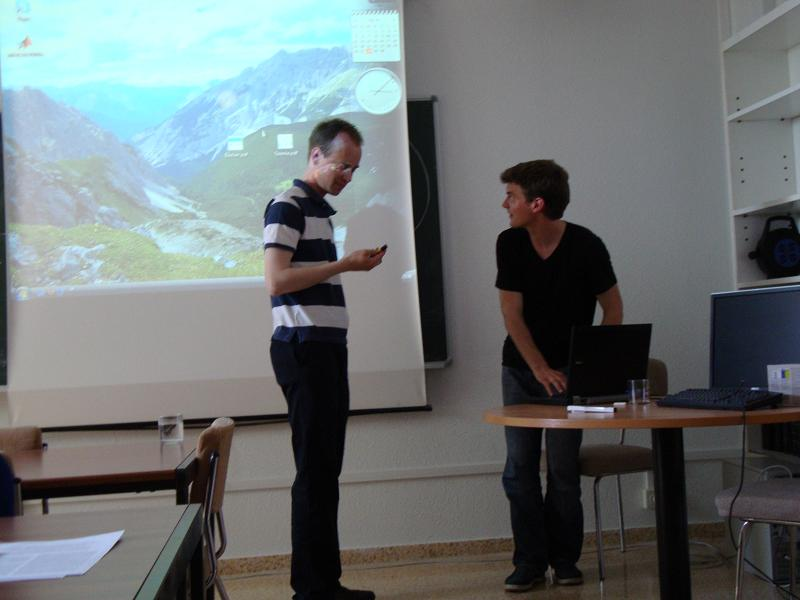
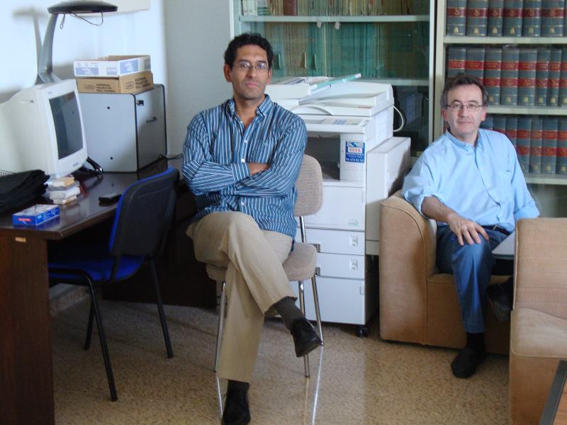
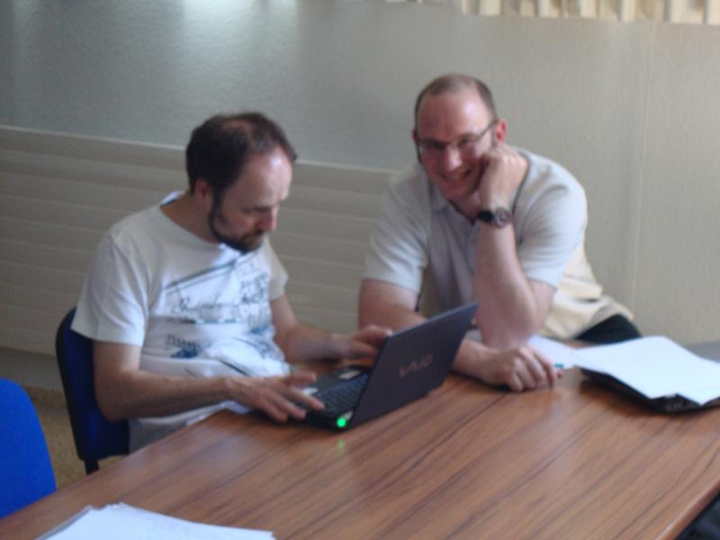
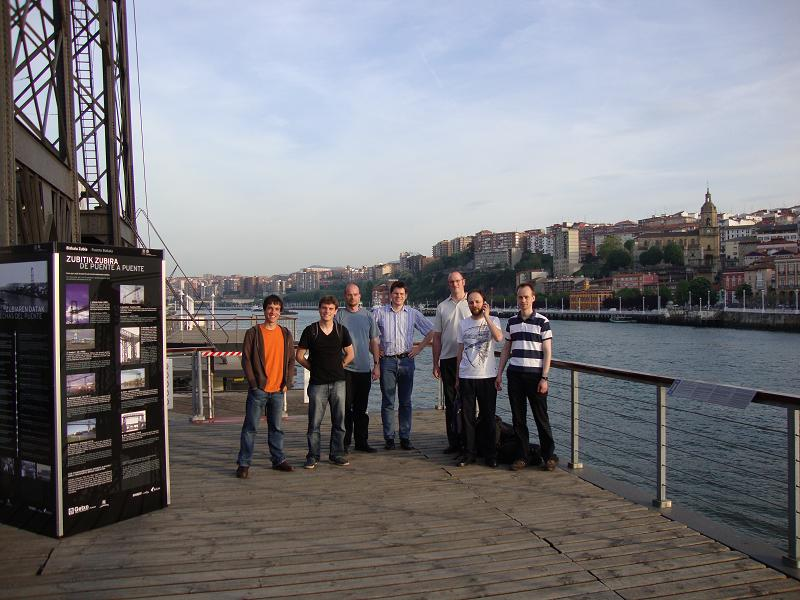

Photos (second day of the worskhop)

Otfried
Gühne

Thierry
Bastin

Sönke
Niekamp
and Bastian Jungnitsch

Enrique
Solano and Iñigo
Egusquiza

Thierry
Bastin and Pierre Mathonet

Some
of the participants of the workshop: Iñigo
Urizar, Bastian
Jungnitsch , Geza Toth, Otfried
Gühne, Pierre Mathonet, Thierry Bastin and Sönke Niekamp
at the Puente Colgante in Getxo